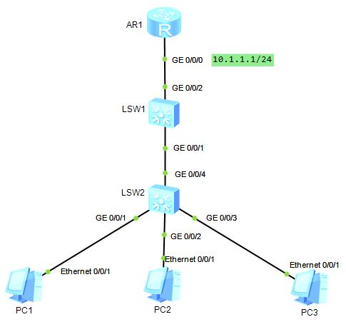
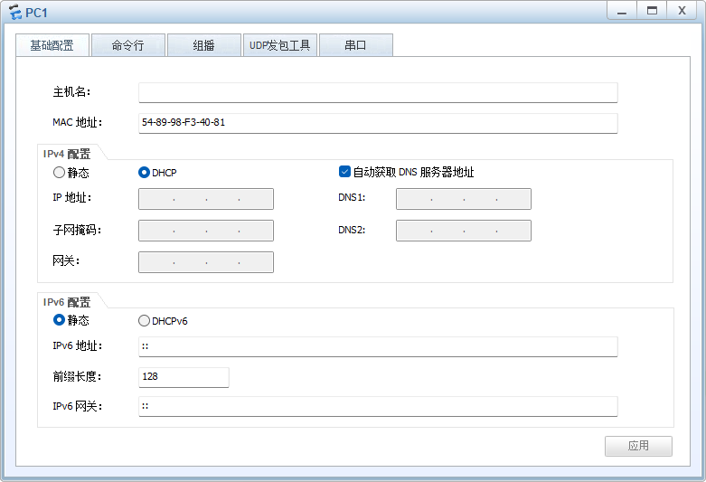

| 命令 | 说明 |
|---|---|
| dhcp enable | 启动 DHCP |
| ip pool [pool_name] | 命名地址池；全局模式 |
| network [NETWORK] mask [MASK] | 指定网络 |
| dhcp select interface/global | 选择接口池/全局池 |
| lease day [days] hour [hours] minute [minutes] | 租期；天数 day 是必填项，小时和分钟是可选；
如果不配置，华为设备默认租期通常为 1 天 |
| excluded-ip-address [start_ip] [end_ip] | IP排除 |
| dns-list [] | 指定 DNS |
| gateway-list [] | 指定网关 Gateway |
| display ip pool | 查看地址池 |
| display ip pool name [name] | 查看指定名称的地址池 |


system-view undo infor-center enable sysname DHCP58
dhcp enable
ip pool mypool # 指定 IP 地址池名称 network 10.1.58.0 mask 24 #指定网络和掩码 dns-list 8.8.8.8 #指定 DNS gateway-list 10.1.58.1 #指定网关 Gateway lease day 0 hour 0 minute 30 # 设置租期 excluded-ip-address 10.1.58.1 10.1.58.10 #排除网关、DNS 等保留地址 quit
inter g0/0/0 # 选择端口 ip address 10.1.58.1 24 # 配置IP dhcp select global # 让接口使用全局地址池分配 IP quit
return save
主机启动抓包、先释放，再更新
ipconfig /release
ipconfig /renew
主机启动抓包、先释放，再更新
ipconfig /release
ipconfig /renew
system-view undo info-center enable sysname [sysname] dhcp enable ip pool mypool network [network] mask [mask] gateway-list [dns] dns-list 8.8.8.8 lease day [day] hour [hour] minute [minute] excluded-ip-address [ips] quit interface [interface] ip address [ip] [mask] dhcp select global quit return save
system-view sysname DHCP-Server-Interface dhcp enable interface [interface] ip address [ip] [mask] dhcp select interface // Optional dhcp server dns-list [dns] dhcp server lease day [day] hour [hour] minute [minute] dhcp server excluded-ip-address [ips] return save